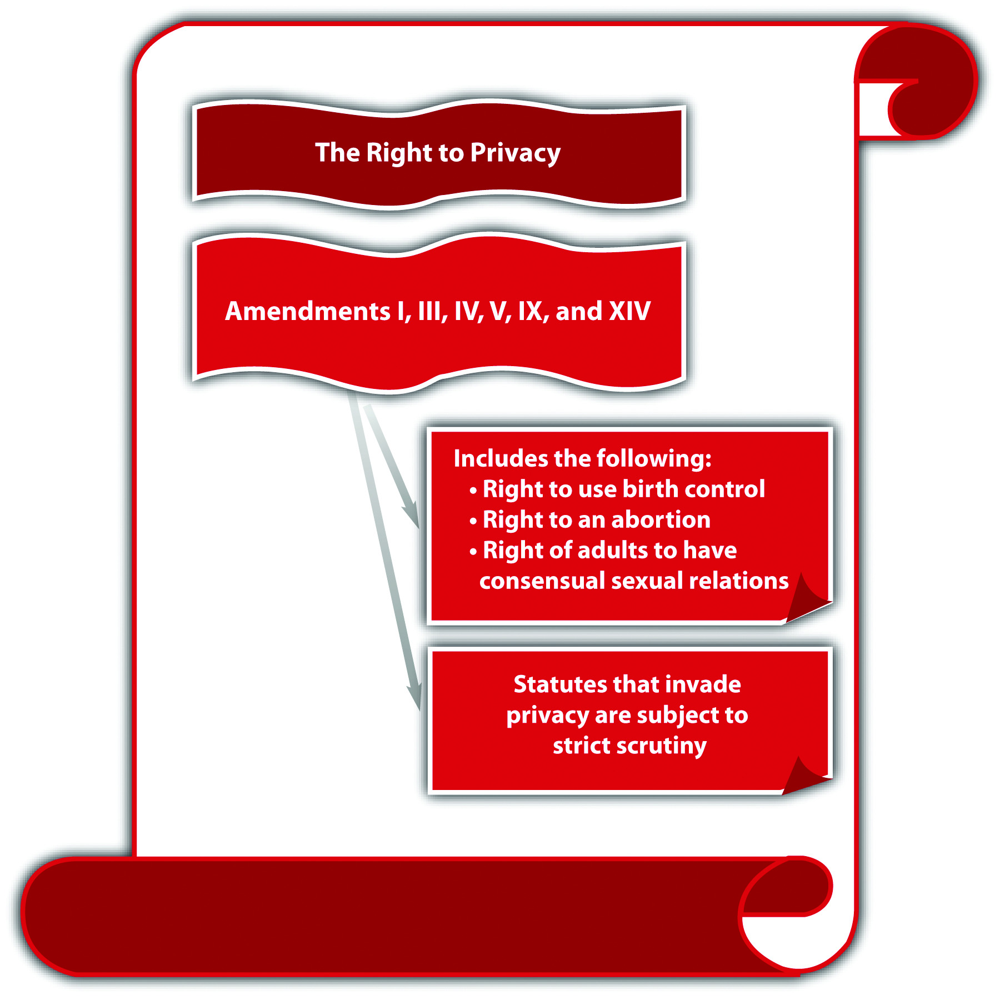

The federal Constitution does not explicitly protect privacy. However, several of the amendments in the Bill of Rights ensure and protect individual decision making and autonomy from governmental intrusion. Thus modern interpretations of the Constitution by the US Supreme Court have created a right to privacyThe Constitution’s protection of individual autonomy against government intrusion..Griswold v. Connecticut, 381 U.S. 479 (1965), accessed October 9, 2010, http://caselaw.lp.findlaw.com/scripts/getcase.pl?court=us&vol=381&invol=479. This right is considered fundamental and subject to strict scrutiny; only a compelling government interest can justify a statute encroaching on its protections. Many states include an explicit right to privacy in their state constitutions.Hawaii Constitution, art. I, § 6, accessed October 9, 2010, http://hawaii.gov/lrb/con/conart1.html.
US Supreme Court precedent has held that the right to privacy comes from the First, Third, Fourth, Fifth, Ninth, and Fourteenth Amendments. The First Amendment protects the right to speak freely, assemble peacefully, and worship according to individual choice. The Third Amendment prohibits the government from forcing individuals to quarter, house, or feed soldiers. The Fourth Amendment prevents the government from unreasonably searching or seizing an individual or an individual’s property. The Fifth and Fourteenth Amendments provide due process of law before the government can deprive an individual of life, liberty, or property. The Ninth Amendment states that rights not explicitly set forth in the Constitution may still exist. Taken together, these amendments indicate that the Constitution was written to erect a barrier between individuals and an overly intrusive and regulatory government. In modern society, this right to privacy guarantees the right to use birth control, the right to an abortion, and the right to participate in consensual sexual relations.
The right to privacy was first established in the US Supreme Court case of Griswold v. Connecticut, 381 U.S. 479 (1965). In Griswold, the defendants, Planned Parenthood employees, were convicted of prescribing birth control as accessories under two Connecticut statutes that criminalized the use of birth control. The Court found the statutes unconstitutional, holding that the First, Third, Fourth, Fifth, and Ninth Amendments created a “penumbra” of unenumerated constitutional rights, including zones of privacy.Griswold v. Connecticut, 381 U.S. 479, 483 (1965), accessed October 9, 2010, http://caselaw.lp.findlaw.com/scripts/getcase.pl?court=us&vol=381&invol=479. The Court stated that marital privacy, especially, deserved the utmost protection from governmental intrusion. The Griswold case set the stage for other fundamental privacy rights related to intimacy, including the right to an abortion and the right to consensual sexual relations.
The right to an abortion was set forth in the seminal US Supreme Court case of Roe v. Wade, 410 U.S. 113 (1973). In Roe, which examined a Texas statute criminalizing abortion, the Court held that every woman has the right to a legal abortion through the first trimester of pregnancy. In the aftermath of the Roe decision, more than half of the nation’s state laws criminalizing abortion became unconstitutional and unenforceable. The Court held that state government has a legitimate interest in protecting a pregnant woman and her fetus from harm, which becomes a compelling interest when she has reached full term. However, during the first trimester, health concerns from abortion do not justify the erosion of a woman’s right to make the abortion decision.Roe v. Wade, 410 U.S. 113, 162 (1973), accessed October 10, 2010, http://www.law.cornell.edu/supct/html/historics/USSC_CR_0410_0113_ZO.html. The Court thereafter struck down the Texas antiabortion statute as overbroad under the Fourteenth Amendment due process clause. Specifically, the Court held that during the first trimester of pregnancy, the abortion decision must be left to the pregnant woman and her attending physician.Roe v. Wade, 410 U.S. 113, 164 (1973), accessed October 10, 2010, http://www.law.cornell.edu/supct/html/historics/USSC_CR_0410_0113_ZO.html. In a recent decision post-Roe, the Court upheld a federal statute criminalizing partial-birth abortion, on the grounds that it was not void for vagueness or overbroad under the Fifth Amendment due process clause.Gonzales v. Carhart, 127 S. Ct. 1610 (2007), accessed October 11, 2010, http://scholar.google.com/scholar_case?case=7079370668659431881&hl=en&as_sdt=2&as_vis=1&oi=scholarr.
Even in the aftermath of Roe v. Wade, courts were reluctant to interfere with states’ interests in enacting and enforcing statutes that criminalized sexual conduct. In Bowers v. Hardwick, 478 U.S. 186 (1986), the US Supreme Court upheld a Georgia statute that made it a crime to engage in consensual sodomy.Bowers v. Hardwick, 478 U.S. 186 (1986), accessed October 11, 2010, http://caselaw.lp.findlaw.com/scripts/getcase.pl?court=us&vol=478&invol=186. The Court stated that there is no fundamental right to engage in sodomy and that the history of protecting marriage and family relationships should not be extended in this fashion.Bowers v. Hardwick, 478 U.S. 186, 194–195 (1986), accessed October 11, 2010, http://caselaw.lp.findlaw.com/scripts/getcase.pl?court=us&vol=478&invol=186. Many years later, the Court changed its stance and overruled Bowers in Lawrence v. Texas, 539 U.S. 558 (2003). In Lawrence, a Texas statute criminalizing homosexual sodomy was attacked on its face and as applied to two men who were discovered engaging in sex in their bedroom during a law enforcement search for weapons. The Lawrence decision rested on the due process clause of the Fourteenth Amendment. The Court held that intimate choices are a form of liberty protected by the due process clause, whether or not consenting individuals are married. The Court thereafter struck down the Texas sodomy statute because it was not justified by a sufficient government interest.Lawrence v. Texas, 539 U.S. 558 (2003), accessed October 11, 2010, http://caselaw.lp.findlaw.com/scripts/getcase.pl?court=us&vol=000&invol=02-102.
Most states have statutes criminalizing consensual incest, which is sexual intercourse between family members who cannot legally marry. If an individual attacks a consensual incest statute as unconstitutional under the right to privacy, the court will balance the state’s interest in preventing harm to an infant, such as birth defects, with an individual’s interest in having consensual sexual intercourse with a family member, using strict scrutiny. If the court finds that the government interest is compelling, it can uphold the statute as long as it is not vague or overbroad.
Figure 3.6 The Right to Privacy
Answer the following questions. Check your answers using the answer key at the end of the chapter.